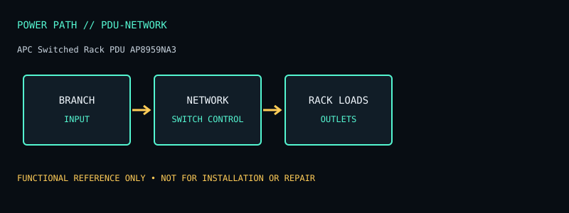

[ NETWORKED / SWITCHED PDUS // MODEL RECORD ]
APC Switched Rack PDU AP8959NA3
Network-managed switched Rack PDU 2G, 20 A / 208 V with mixed IEC outputs. The specifications below are for this named model and region only; verify the complete product label and matching manual before deployment or service.

ARCHIVAL IDENTIFICATION: Preserve the complete SKU, suffix, region, date code, revision, installed battery part (if present), firmware and physical condition. Similar model names do not establish hardware equivalence.
Specifications, conditions & service
| Catalog subcategory | Networked / switched PDUs |
|---|---|
| Topology / power path | Network-managed rack distribution with outlet switching; not a UPS or line conditioner. |
| Ratings / output configuration | 20 A, 208 V single-phase PDU (manufacturer product listing); the L6-20 input and upstream branch circuit determine usable capacity. Twenty-one IEC C13 and three IEC C19 outlets on the AP8959NA3 configuration; all share the input feed’s total current capacity. |
| Battery / replaceability | No battery. |
| Runtime / limits and conditions | No battery runtime. Outlets follow the upstream AC source and switched state. |
| Interfaces / monitoring | Network management supports remote monitoring/control and outlet switching; capabilities depend on the configured management interface and firmware. |
| Safety / installation caveats | Must be connected to a correctly rated 120 V, 30 A circuit; never infer load capacity by adding outlet ratings. Switching a live outlet may interrupt storage/servers. It does not provide surge suppression or UPS backup unless separately specified. |
| Model variants / revision checks | AP8959NA3 is the 208 V, 20 A model with 21 C13/3 C19 outlets and L6-20 input; it is discontinued and the manufacturer page directs users to APDU9959NA3. Do not confuse with 120 V AP89xx variants. |
Field service / archive notes
- Record labels and connector layout before installation; document load, input conditions, measured behavior and test date separately from manufacturer-rated values.
- Never open energized mains equipment. Battery devices can retain dangerous voltage or high fault current; follow the manufacturer’s replacement and recycling procedure.
- Inspect enclosure, cord, plugs, grounding, indicators, alarms and battery condition. Quarantine damaged, swollen, leaking or heat-affected equipment.
- Network-management appliances should be isolated, updated where supported and configured with non-default credentials; do not expose legacy management interfaces directly to the public internet.
Manufacturer references
- Manufacturer product listing — APC Switched Rack PDU AP8959NA3Model identity and product-family specification reference. Confirm exact regional SKU against the chassis label.
- Manufacturer manual / support documentationConsult the version matching the exact SKU. Runtime references are load- and condition-dependent estimates where supplied, never a guarantee for a particular aged unit.